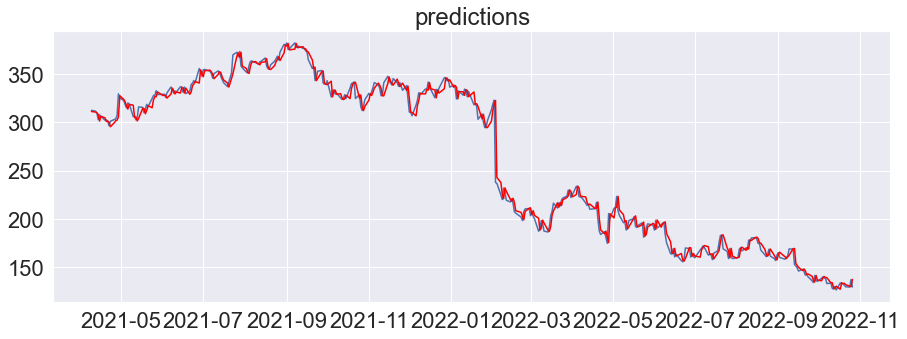

Out of Sample Prediction

MA, AR, and Arma
introml.analyticsdojo.com
61. Out of Sample Prediction#
import pandas as pd
import numpy as np
import matplotlib.pyplot as plt
from matplotlib.pylab import rcParams
rcParams['figure.figsize'] = 15, 5
import seaborn as sns
#!pip -q install yfinance
import yfinance as yf
sns.set(font_scale=2)
FB = yf.Ticker("META")
FB_values = FB.history(start="2020-06-01")
train_values=FB_values[:len(FB_values)-1000]
test_values=FB_values[len(FB_values)-1000:]
FB_values[['Close']].plot(lw=2,title='Complete')
train_values[['Close']].plot(lw=2,title='Train')
test_values[['Close']].plot(lw=2,title='Test')
<AxesSubplot:title={'center':'Test'}, xlabel='Date'>

from statsmodels.tsa.arima.model import ARIMA
ARMA_model = ARIMA(endog=train_values['Close'], order=(10, 0, 10))
results = ARMA_model.fit()
print(results.summary())
/opt/anaconda3/lib/python3.8/site-packages/statsmodels/tsa/base/tsa_model.py:581: ValueWarning: A date index has been provided, but it has no associated frequency information and so will be ignored when e.g. forecasting.
warnings.warn('A date index has been provided, but it has no'
/opt/anaconda3/lib/python3.8/site-packages/statsmodels/tsa/base/tsa_model.py:581: ValueWarning: A date index has been provided, but it has no associated frequency information and so will be ignored when e.g. forecasting.
warnings.warn('A date index has been provided, but it has no'
/opt/anaconda3/lib/python3.8/site-packages/statsmodels/tsa/base/tsa_model.py:581: ValueWarning: A date index has been provided, but it has no associated frequency information and so will be ignored when e.g. forecasting.
warnings.warn('A date index has been provided, but it has no'
/opt/anaconda3/lib/python3.8/site-packages/statsmodels/tsa/statespace/sarimax.py:978: UserWarning: Non-invertible starting MA parameters found. Using zeros as starting parameters.
warn('Non-invertible starting MA parameters found.'
SARIMAX Results
==============================================================================
Dep. Variable: Close No. Observations: 216
Model: ARIMA(10, 0, 10) Log Likelihood -681.035
Date: Wed, 26 Oct 2022 AIC 1406.071
Time: 20:01:06 BIC 1480.327
Sample: 0 HQIC 1436.071
- 216
Covariance Type: opg
==============================================================================
coef std err z P>|z| [0.025 0.975]
------------------------------------------------------------------------------
const 264.4526 28.232 9.367 0.000 209.118 319.787
ar.L1 0.5871 1.666 0.352 0.724 -2.678 3.852
ar.L2 0.8793 0.858 1.024 0.306 -0.803 2.562
ar.L3 -1.2841 1.268 -1.013 0.311 -3.769 1.201
ar.L4 0.4175 2.047 0.204 0.838 -3.595 4.430
ar.L5 0.9243 0.893 1.035 0.301 -0.827 2.675
ar.L6 -1.2504 1.344 -0.930 0.352 -3.885 1.384
ar.L7 0.2804 1.940 0.145 0.885 -3.522 4.082
ar.L8 0.8848 0.699 1.265 0.206 -0.486 2.255
ar.L9 -0.2810 1.278 -0.220 0.826 -2.785 2.223
ar.L10 -0.1738 0.550 -0.316 0.752 -1.251 0.904
ma.L1 0.5007 1.674 0.299 0.765 -2.781 3.783
ma.L2 -0.4955 1.219 -0.407 0.684 -2.884 1.893
ma.L3 0.5515 0.585 0.943 0.346 -0.595 1.698
ma.L4 0.5197 1.248 0.417 0.677 -1.926 2.965
ma.L5 -0.6316 1.142 -0.553 0.580 -2.871 1.607
ma.L6 0.3860 0.726 0.531 0.595 -1.038 1.810
ma.L7 0.5651 0.855 0.661 0.509 -1.111 2.241
ma.L8 -0.4679 1.079 -0.434 0.665 -2.583 1.647
ma.L9 -0.3629 0.618 -0.587 0.557 -1.575 0.849
ma.L10 0.0409 0.399 0.102 0.918 -0.742 0.824
sigma2 30.4260 3.419 8.898 0.000 23.724 37.128
===================================================================================
Ljung-Box (L1) (Q): 0.18 Jarque-Bera (JB): 5.18
Prob(Q): 0.67 Prob(JB): 0.07
Heteroskedasticity (H): 0.85 Skew: -0.09
Prob(H) (two-sided): 0.49 Kurtosis: 3.74
===================================================================================
Warnings:
[1] Covariance matrix calculated using the outer product of gradients (complex-step).
/opt/anaconda3/lib/python3.8/site-packages/statsmodels/base/model.py:566: ConvergenceWarning: Maximum Likelihood optimization failed to converge. Check mle_retvals
warnings.warn("Maximum Likelihood optimization failed to "
# evaluate an ARIMA model using a walk-forward validation
from pandas import read_csv
from pandas import datetime
from matplotlib import pyplot
from statsmodels.tsa.arima.model import ARIMA
from sklearn.metrics import mean_squared_error
from math import sqrt
# load dataset
FB_values = FB.history(start="2020-06-01")
train_values=FB_values[:len(FB_values)-1000]
test_values=FB_values[len(FB_values)-1000:]
test_values=test_values['Close']
train_values=train_values['Close']
history = [x for x in train_values]
history
# split into train and test sets
predictions = list()
# walk-forward validation
for t in range(len(test_values)):
model = ARIMA(history, order=(1,0,1))
model_fit = model.fit()
output = model_fit.forecast(steps=1)
yhat = output[0]
predictions.append(yhat)
obs = test_values[t]
history.append(obs)
#print('predicted=%f, expected=%f' % (yhat, obs))
# evaluate forecasts
rmse = sqrt(mean_squared_error(test_values, predictions))
print('Test RMSE: %.3f' % rmse)
<ipython-input-4-f5b348368ee8>:3: FutureWarning: The pandas.datetime class is deprecated and will be removed from pandas in a future version. Import from datetime module instead.
from pandas import datetime
Test RMSE: 7.590
# plot forecasts against actual outcomes
predictions=pd.DataFrame(predictions)
test_values=pd.DataFrame(test_values)
predictions.index=test_values.index
pyplot.plot(test_values)
plt.title("predictions")
pyplot.plot(predictions, color='red')
pyplot.show()
